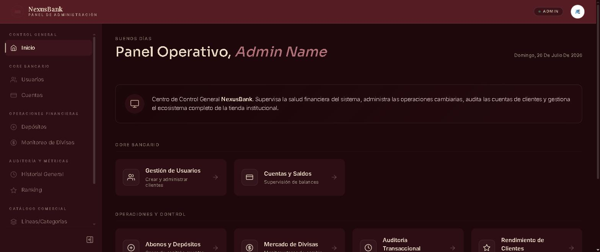
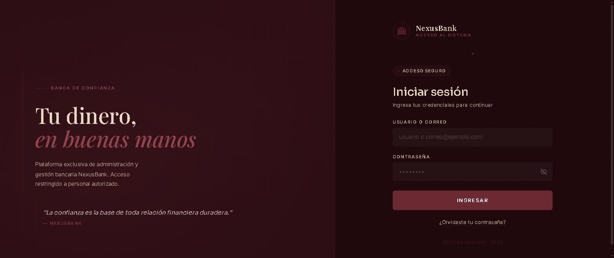
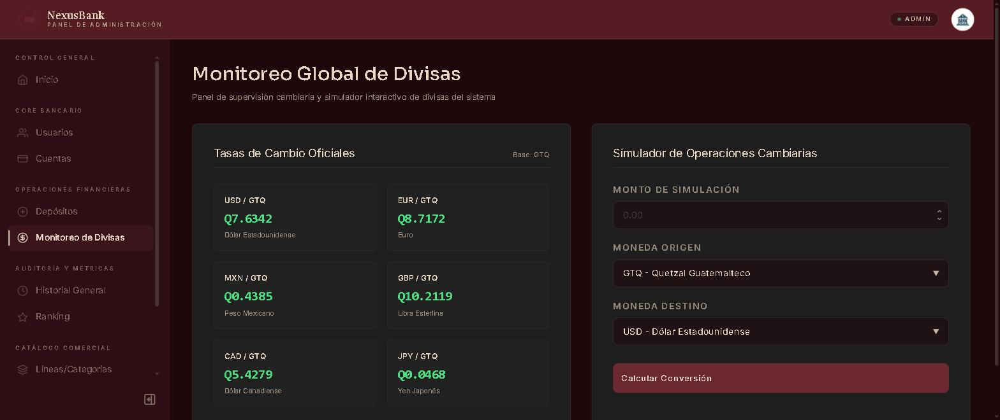
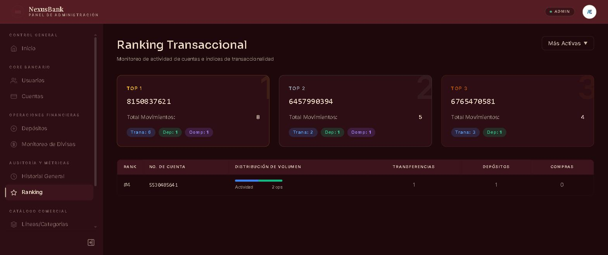

Sistema Bancario de Microservicios
NexusBank: plataforma bancaria repartida en cuatro microservicios independientes, con panel web de administración, app móvil para clientes y contabilidad por doble partida. Desplegada y funcionando en producción.

Contexto
NexusBank es el sistema bancario que desarrollamos como equipo —Nexus Code— durante mi formación en el Centro Educativo Técnico Laboral KINAL, partiendo de un código base del docente Braulio Echeverría. Cubre la operación completa de un banco: clientes y cuentas, depósitos, transferencias, favoritos, compra de productos y servicios del propio banco, conversión de divisas y auditoría de movimientos.
El encargo no era entregar un CRUD, sino un sistema repartido en servicios independientes que se pudiera desplegar de verdad. Hoy está en línea: el panel corre en Firebase Hosting, los backends en Vercel y las bases de datos en Supabase y MongoDB Atlas.
El problema
Un banco no perdona los errores de consistencia: si una transferencia descuenta de una cuenta y falla al acreditar en la otra, el dinero desaparece. A eso se sumaba que cuatro dominios muy distintos —identidad, cuentas, movimientos y catálogo— tenían que evolucionar en paralelo sin que los integrantes del equipo se pisaran entre sí.
El reto, entonces, era doble: separar esos dominios en servicios con su propia base de datos pero con una identidad y una sesión compartidas, y garantizar que ninguna operación financiera pudiera quedarse a medias.
Mi rol
Trabajé en dos frentes: la coordinación del equipo y el desarrollo.
- Como Scrum Master, facilité las ceremonias, mantuve el backlog y traduje los requisitos del proyecto en tareas repartibles entre los integrantes.
- Desarrollé el microservicio de cuentas bancarias (
server-admin): alta y baja lógica de cuentas, reactivación automática, y el endpoint de validación de cuenta destino que consume el servicio de movimientos. - Desarrollé el microservicio de productos y servicios (
server-products): catálogo con imágenes en Cloudinary, órdenes de compra y el ciclo de vida de la orden con devolución de stock y reembolso. - Participé en el panel web en React y en la app móvil en React Native.
- Me encargué de la puesta en producción de toda la plataforma.
La arquitectura
Cuatro microservicios y dos clientes. Cada servicio tiene su propio dominio y su propia base de datos, y todos comparten el mismo JWT: un token emitido por el servicio de autenticación es válido en los otros tres sin necesidad de consultarlo, porque comparten secreto, issuer y audience.
auth-service
.NET 8 · PostgreSQL
Identidad del sistema: login, roles, perfil y verificación por correo. Clean Architecture, contraseñas con Argon2 y JWT con refresh token rotativo.
server-admin
Node · Express · MongoDB
Cuentas bancarias: número aleatorio de 10 dígitos, datos del titular, baja lógica y validación de la cuenta destino en las transferencias.
movimientos-bancarios
Node · Express · MongoDB
El corazón financiero: depósitos, transferencias, compras, favoritos, historial, ranking y divisas. Aquí vive la contabilidad y los saldos.
server-products
Node · Express · MongoDB
Catálogo de productos y servicios exclusivos del banco, con imágenes en Cloudinary, y el procesamiento de las órdenes de compra.
client-admin
React 19 · Vite · Zustand
Una sola SPA con dos experiencias según el rol: panel de administración del banco y vista personal del cliente.
client-user
Expo · React Native
App móvil para clientes sobre los mismos cuatro backends: saldo, transferencias, favoritos, tienda y perfil con foto.
Decisiones técnicas
- Doble partida contable. Cada operación genera dos asientos —débito y crédito— dentro de un mismo movimiento, como en la contabilidad real. El saldo no se «edita»: se deriva de los asientos.
- Transacciones ACID en MongoDB. Las operaciones que tocan varias cuentas corren dentro de una transacción, que MongoDB solo permite en modo replica set. El sistema detecta al arrancar qué tipo de MongoDB tiene delante y, si es standalone, cae a una compensación best-effort en lugar de romperse.
- Saldos en centavos. Se guardan como entero para evitar los errores de redondeo del punto flotante, pero la API los expone en quetzales mediante getters de Mongoose: los clientes nunca multiplican ni dividen por 100.
- Token relay en las compras. Cuando un cliente compra, el servicio de productos propaga su cabecera de autorización al de movimientos, de modo que el débito se ejecuta con la identidad del cliente y no con una credencial de servicio.
- Renovación de sesión transparente. El interceptor de Axios detecta un 401, pide un token nuevo, encola las peticiones que iban en vuelo y las reintenta. Si la renovación falla, cierra la sesión.
- Dos implementaciones del servicio de autenticación. Una en .NET 8 y otra en Node, con el mismo contrato, la misma base de datos y el mismo secreto JWT: son intercambiables cambiando una variable de entorno. En producción corre la de Node, porque Vercel ejecuta funciones serverless.
Las reglas del banco
Buena parte del trabajo fue traducir los requisitos del negocio en validaciones que ningún camino del sistema pudiera saltarse.
- Transferencias de hasta Q2,000 por operación y Q10,000 acumulados al día, siempre contra el saldo disponible.
- Los depósitos solo los registra un administrador y pueden revertirse dentro del primer minuto; pasado ese plazo se puede ajustar el monto, pero nunca eliminarlos.
- Ingresos mensuales mínimos de Q100 para abrir cuenta; el administrador no puede tocar el DPI ni la contraseña del cliente.
- Favoritos con alias para transferir en un paso, consulta de los últimos cinco movimientos y ranking de cuentas por actividad.
- Baja lógica en todo el sistema: nada se borra físicamente, ni cuentas, ni usuarios, ni productos.
- Conversión de divisas con tasas de cambio en vivo.
Puesta en producción
El sistema no se quedó en localhost. Todo el stack está desplegado y es
accesible públicamente.
- Panel web en Firebase Hosting, con reescritura de rutas para que el enrutador de la SPA resuelva del lado del cliente.
- Los cuatro backends en Vercel como funciones serverless, cada uno con su configuración propia y sus secretos en variables de entorno, nunca en el repositorio.
- Supabase para PostgreSQL y MongoDB Atlas para las tres bases Mongo. Al ser Atlas un replica set, las transacciones reales funcionan sin configuración adicional.
- CORS por lista blanca en los servicios de autenticación y cuentas, restringido al dominio del panel.
Galería



Resultados y aprendizajes
El equipo entregó una plataforma bancaria completa y desplegada, con documentación interactiva por servicio y una colección de 55 peticiones para probar la API de punta a punta. Es el proyecto más ambicioso en el que he trabajado y el que más me enseñó sobre sistemas distribuidos.
Lo que más me marcó fue descubrir que en un sistema repartido los problemas difíciles no están dentro de cada servicio, sino entre ellos: qué pasa si el segundo servicio no responde, cómo viaja la identidad del usuario de un salto al siguiente, y cómo se deja el sistema en un estado consistente cuando algo falla a mitad de camino. Como Scrum Master aprendí, además, que coordinar seis piezas y varias personas exige tanto criterio como escribir el código.
Si lo continuara, endurecería el CORS de los dos servicios que todavía aceptan cualquier origen y añadiría pruebas automatizadas sobre los flujos financieros, que hoy se validan a mano con Postman.